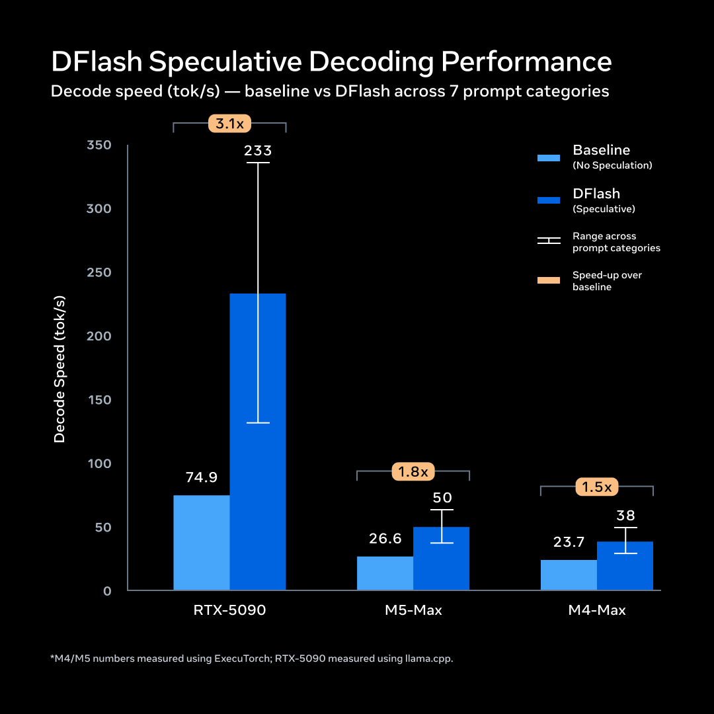
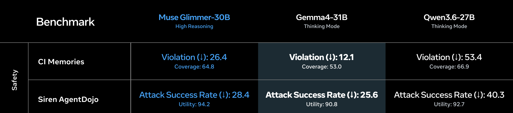

Executive Summary
메타가 2026년 8월 10일 뮤즈 글리머(Muse Glimmer)를 공개했습니다. 300억 파라미터 모델을 4비트로 줄여 그래픽 카드 한 장이 꽂힌 개인 PC나 맥에서 돌아가게 만든 오픈 웨이트 모델입니다. 발표문이 밝힌 용도는 분명합니다. 일정을 관리하고 메시지를 초안하고 파일을 정리하는 에이전트는 개인 컨텍스트에 깊이 접근해야 하니, 그 추론을 기기 밖으로 내보내지 않겠다는 것입니다.
이 배치가 바꾸는 것은 성능 그래프가 아니라 입력의 출처입니다. 클라우드 API를 부를 때 모델의 실력은 공급자가 모아 놓은 사전학습 데이터에서 나왔고, 그 데이터는 우리가 손댈 수 없는 영역이었습니다. 기기 위 에이전트가 매 요청에서 실제로 읽는 것은 그 기기에 쌓인 파일과 일정과 메시지입니다. 손댈 수 없던 변수가 손댈 수 있는 변수로 바뀌었고, 동시에 관리 책임도 함께 넘어왔습니다.
발표문이 말한 사실과 그 위에서 우리가 끌어낸 해석은 구분해 적었습니다. 1~2절이 사실이고, 3절부터가 해석입니다.
주요 수치
앞의 두 숫자는 이 모델이 개인 기기 안에 들어앉을 수 있게 된 조건입니다. 뒤의 두 숫자는 같은 체급 오픈 모델과 견줬을 때 이 모델이 이기는 항목과 지는 항목입니다.
출처: Meta AI Research, MarkTechPost
55GB → 18GB
4비트 양자화 후 모델 크기
24GB VRAM 소비자 GPU 한 장에 올라갑니다
12만+ 토큰
한 번에 읽을 수 있는 컨텍스트
기기 안 문서와 일정을 통째로 넣기 위한 크기
75.5 vs 62.5
MCP-Atlas 도구 호출 점수
같은 체급 오픈 모델 Qwen3.6-27B와 비교
65.9 vs 75.6
OSWorld 컴퓨터 조작 점수
화면을 직접 다루는 작업은 같은 비교군에 밀립니다
노트북 한 대에 올라간 300억 파라미터
뮤즈 글리머는 메타 초지능 연구소(Meta Superintelligence Labs)가 공개한 300억 파라미터 밀집형 멀티모달 모델입니다. 라이선스는 아파치 2.0이고 가중치가 그대로 공개됐습니다. 메타의 최상위 비공개 모델 뮤즈 스파크의 출력을 교사 신호로 삼아 증류한 결과물이라, 계보로 보면 스파크의 축소판에 가깝습니다. 텍스트와 이미지를 받고 텍스트를 내놓으며, 지식 컷오프는 2026년 1월 4일입니다.
기기 안에 들어앉을 수 있게 된 조건은 크기입니다. 전정밀도로는 55GB가 넘어 소비자 하드웨어에 올라가지 않지만, 4비트 양자화 빌드는 18GB에서 20GB 사이로 내려옵니다. 메타는 두 종류를 함께 냈습니다. 32GB VRAM을 쓰는 빌드는 평균 성능 저하가 0.2%, 24GB에 맞춘 17GB 빌드는 1.0%입니다. 생성 속도는 DFlash라는 초안 생성기가 한 번에 16토큰을 예측하는 방식으로 1.5배에서 3.1배까지 끌어올립니다. RTX 5090에서 초당 74.9토큰이 233.4토큰이 됐고, 애플 M5 Max에서는 26.6토큰이 50.2토큰으로 올라갑니다.

내려받는 경로도 함께 열렸습니다. 허깅페이스에 BF16 원본과 GGUF 양자화 빌드, 모바일과 임베디드용 ExecuTorch 빌드, 속도를 올리는 DFlash 초안 생성기가 같이 올라갔습니다. llama.cpp와 MLX 통합은 곧 붙는다고 예고했고, 지원 언어는 100개가 넘습니다. 특정 회사의 앱을 거치지 않고도 각자 기기에 직접 올려 돌려 볼 수 있는 상태라는 뜻입니다.
벤치마크는 이 모델이 무엇을 위해 만들어졌는지 그대로 드러냅니다. 도구를 부르고 여러 단계를 이어 붙이는 작업에서는 비교 대상을 크게 앞섭니다. MCP-Atlas 75.5는 Gemma4-31B의 54.2, Qwen3.6-27B의 62.5와 견주면 상당한 격차입니다. DeepSearch QA 74.6, AIME 2026 94.7도 같은 방향입니다. 반면 화면을 보고 마우스와 키보드를 직접 다루는 OSWorld-Verified는 65.9로 Qwen의 75.6에 밀리고, 터미널 작업과 SWE-Bench Verified에서도 열세입니다. 계획을 세우고 도구를 호출하는 쪽은 강하고, 손으로 화면을 조작하는 쪽은 아직 약합니다.
메타는 왜 이 모델을 기기 안에 두려 하나
메타는 그 이유를 발표문 앞머리에서 밝혀 뒀습니다. 일정을 관리하고 메시지를 초안하고 파일을 정리하며 사용자가 일하는 방식을 학습하는 에이전트라면 개인 컨텍스트에 깊이 접근해야 하고, 그 컨텍스트에는 개인 파일과 대화 기록, 자격증명, 사내 문서가 들어 있다는 것입니다. 이런 자료를 다루는 워크플로에서는 추론이 기기를 떠나지 않는 것이 전제 조건이라는 설명이 따라붙습니다.
테크크런치는 이 발표를 마크 저커버그가 말해 온 개인 초지능(personal superintelligence) 구상의 첫 실물로 읽었습니다. 눈여겨볼 대목은 메타가 그은 선입니다. 사람들이 직접 소유하고 돌리는 모델은 열어 두고, 회사가 통제권을 쥐는 더 강력한 지능은 닫아 둡니다. 글리머는 열려 있고 스파크는 닫혀 있습니다. 기술 매체 마크테크포스트는 여기에 규제 산업과 망 분리 환경, 데이터 상주 요건을 덧붙였습니다. 네트워크 호출이 아예 없으니 데이터가 국경을 넘지 않는다는 논리입니다.
이 설계에는 조건이 하나 더 따라옵니다. 추론이 기기 안에서 끝나니 인터넷 연결 여부와 상관없이 동작합니다. 테크크런치가 전한 저커버그의 발언도 같은 방향입니다. 초지능이 소수의 서버에 모여 있지 않고 개인에게 흩어질 때 개인의 역량이 커지는 시대가 열린다는 이야기입니다.
여기까지가 발표문과 보도가 말한 내용입니다. 그런데 이 배치를 데이터 쪽에서 보면 조용히 자리를 바꾸는 것이 하나 있습니다. 클라우드 API를 부르던 시절, 답변의 품질을 좌우한 것은 공급자가 모아 놓은 사전학습 데이터였습니다. 그 데이터가 어떻게 수집되고 정제됐는지는 우리 소관이 아니었고, 우리가 보내는 것은 프롬프트 몇 줄이었습니다. 기기 위 에이전트가 매 요청에서 읽는 것은 다릅니다. 어제 받은 첨부파일, 지난주 회의록, 캘린더에 남아 있는 일정, 다운로드 폴더에 쌓인 PDF입니다.
아래 도식의 왼쪽은 지금까지의 배치입니다. 실력의 근거가 공급자 쪽에 있고, 우리는 그 결과를 받아 씁니다. 오른쪽은 글리머가 상정한 배치입니다. 모델 가중치는 누구에게나 같지만, 그 위에 얹히는 입력은 기기마다 다릅니다.
어질러진 폴더가 그대로 근거가 된다
여기서부터는 우리의 해석입니다. 메타의 발표문은 에이전트가 개인 파일에 접근해 일정을 관리하고 파일을 정리한다는 데까지만 말합니다. 그 파일이 얼마나 정돈돼 있느냐가 결과를 가른다는 말은 어디에도 없습니다. 데이터 품질을 다뤄 온 쪽에서 이 배치가 어떻게 보이는지를 적었습니다.
1절에서 본 벤치마크 프로필이 여기에 겹칩니다. 이 모델이 잘하는 쪽은 계획을 세우고 도구를 불러 여러 단계를 이어 붙이는 작업입니다. 근거를 잘 골랐든 잘못 골랐든 그 위에서 다음 단계로 넘어간다는 뜻이기도 합니다. 연결이 끊긴 채로도 돌아간다는 장점 역시 같은 방향으로 작용합니다. 답을 맞춰 볼 외부 원천이 없는 시간에는 기기 안 파일이 유일한 근거가 됩니다.
12만 토큰은 넉넉해 보이지만 무한하지 않습니다. 노트북 한 대에 쌓인 문서를 통째로 넣을 수는 없으니, 에이전트는 매번 어떤 파일을 읽을지 골라야 합니다. 고르는 단서는 파일명, 폴더 위치, 수정 시각, 문서 안의 몇 줄입니다. 이 단서들이 사람 눈에도 의미가 없는 상태라면 모델에게도 마찬가지입니다. 「제안서_최종_진짜최종_v3(1).pptx」와 「제안서_최종_진짜최종_v3.pptx」 중 어느 쪽이 실제로 나간 버전인지, 파일 시스템은 답을 갖고 있지 않습니다.
아래 표는 로컬 데이터에서 흔히 보이는 상태와, 그 상태가 에이전트 작업에서 어떤 실패로 이어지는지를 나란히 놓은 것입니다. 왼쪽 항목은 대부분 사람이 혼자 쓸 때는 큰 불편 없이 넘어가던 것들입니다. 캘린더에 지난 일정이 남아 있어도 사람은 날짜를 보고 무시하지만, 일정을 근거로 판단하는 에이전트는 그 줄을 유효한 사실로 읽습니다.
| 로컬 데이터의 상태 | 에이전트가 겪는 일 | 사람 눈에 보이는 증상 |
|---|---|---|
| 같은 문서의 사본 세 개 | 서로 다른 숫자가 든 세 파일 중 무엇이 정본인지 판단할 근거가 없습니다 | 요약할 때마다 다른 수치가 나옵니다 |
| 규칙 없는 파일명 | 어떤 파일을 컨텍스트에 넣을지 고르는 첫 단서가 사라집니다 | 엉뚱한 문서를 근거로 답합니다 |
| 정리되지 않은 캘린더 | 취소되거나 지난 일정이 현재 상태로 읽힙니다 | 이미 끝난 회의를 기준으로 일정을 잡습니다 |
| 출처 불명 다운로드 폴더 | 신뢰 등급이 없는 문서가 사내 자료와 같은 무게로 들어옵니다 | 외부 문서의 주장이 우리 결론으로 둔갑합니다 |
정리: 페블러스. 표의 내용은 메타 발표문에 없는 우리 해석입니다.
표의 마지막 줄은 성능 문제만이 아닙니다. 메타가 함께 공개한 안전성 측정에서 글리머는 Siren AgentDojo 기준 공격 성공률 28.4를 기록했습니다. 문서 안에 심어 둔 지시문이 에이전트를 움직이게 만드는 공격이 열 번 중 세 번 가까이 통했다는 뜻입니다. 내 폴더에 든 문서가 곧 입력이라면, 그 폴더가 곧 공격 표면입니다.

평가자도 기기 안으로 내려온다
발표문에서 한 가지 더 눈에 띄는 대목이 있습니다. 메타는 글리머의 용도로 함수 호출과 데스크톱 에이전트, 코딩 보조와 함께 합성 데이터 생성과 LLM-as-a-judge 평가를 명시했습니다. 다른 모델의 출력을 심사하는 재판관 역할에 맞춰 조율했다는 뜻입니다.
메타가 이 용도를 적은 맥락은 개발자 워크플로입니다. 모델 출력을 대량으로 채점하는 일을 API 비용 없이 로컬에서 돌리라는 이야기입니다. 메타는 여기까지만 적었습니다. 품질을 판정하는 기능이 네트워크 없이도 도는 부품이 됐다면, 문서가 중복인지, 수치가 최신인지, 두 자료가 서로 어긋나는지를 재는 일도 기기 안에서 할 수 있습니다. 데이터를 평가하는 잣대가 클라우드 서비스에서 파일 시스템 옆자리로 옮겨오는 셈입니다.
옮겨온 잣대에는 눈금이 없습니다. 무엇을 중복으로 볼지, 며칠 지난 자료를 낡았다고 할지, 부서마다 다른 정의 중 어느 쪽을 정본으로 삼을지는 모델이 정해 주지 않습니다. 기준을 세워 두지 않으면 모델의 기본값이 그대로 조직의 기준이 됩니다. 그때 조직은 자기 데이터의 상태를, 자기가 만들지 않은 기준으로 채점받게 됩니다.
기본값이 비어 있다는 말은 아닙니다. 글리머는 메타의 비공개 상위 모델 뮤즈 스파크의 출력을 교사 신호로 삼아 증류된 모델입니다. 판정 기준을 적어 두지 않으면 그 빈자리를 채우는 것은 교사 모델이 학습 과정에서 갖게 된 기준입니다. 어떤 문서를 최신으로 볼지, 어떤 표기를 정본으로 볼지가 우리 손 밖에서 정해집니다.
판정하는 도구를 갖는 일과 판정 기준을 갖는 일은 다른 작업입니다. 앞쪽은 이번 공개로 누구나 무료로 갖게 됐고, 뒤쪽은 여전히 각자가 써야 합니다.
우리는 로컬 데이터 준비도를 재 본 적이 있는가
AI를 위한 데이터 준비를 이야기할 때 지금까지의 단위는 데이터셋과 파이프라인이었습니다. 수집 규칙을 정하고 스키마를 맞추고 라벨 품질을 재는 일은 데이터 팀의 영역이었고, 대상은 창고에 들어간 자산이었습니다. 기기 위 에이전트가 상정하는 단위는 그보다 훨씬 작습니다. 노트북 한 대, 팀 공유 드라이브 한 폴더입니다. 이 단위는 지금까지 어떤 품질 지표의 적용 대상도 아니었습니다.
조직이 이 단위를 점검하려 한다면 물어볼 것은 세 가지입니다. 창고에 쌓인 데이터가 아니라, 사람들이 매일 열고 닫는 폴더를 대상으로 하는 질문들입니다.
- 이 폴더에서 같은 사실을 담은 파일이 몇 개입니까. 그중 정본은 무엇으로 식별됩니까.
- 여기 있는 문서 중 지금도 유효한 것과 이미 지난 것을 무엇으로 구분합니까. 날짜입니까, 아니면 여는 사람의 기억입니까.
- 외부에서 들어온 자료와 내부에서 승인된 자료가 같은 폴더에 섞여 있습니까. 섞여 있다면 에이전트는 그 둘을 어떻게 구분합니까.
세 질문에 답이 있으면 그 폴더는 에이전트가 읽을 준비가 된 상태입니다. 답이 막히면 아직 그 폴더는 사람의 기억을 전제로 굴러가고 있습니다. 사람은 기억으로 빈칸을 메우지만, 기기 안에서 도는 300억 파라미터는 그 기억에 접근하지 못합니다.
Editor's Note: 페블러스가 데이터 품질을 이야기할 때 가장 자주 마주치는 상황은 데이터가 나쁘다는 사실을 아무도 모르는 상태가 아니라, 나쁘다는 것은 알지만 무엇을 기준으로 나쁜지 아무도 적어 두지 않은 상태입니다. 온디바이스 에이전트는 이 상태를 개인 폴더 단위까지 끌고 내려옵니다. 지금까지 창고에만 적용하던 질문을 책상 위 폴더에도 물어야 하는 시점이 왔습니다.
참고문헌
- 1.Meta AI Research. (2026-08-10). "Introducing Muse Glimmer: an open agentic model." Meta Superintelligence Labs.
- 2.TechCrunch. (2026-08-10). "Meta's new Glimmer AI model offers a hint at Zuckerberg's personal intelligence vision."
- 3.MarkTechPost. (2026-08-10). "Meta AI Releases Muse Glimmer."